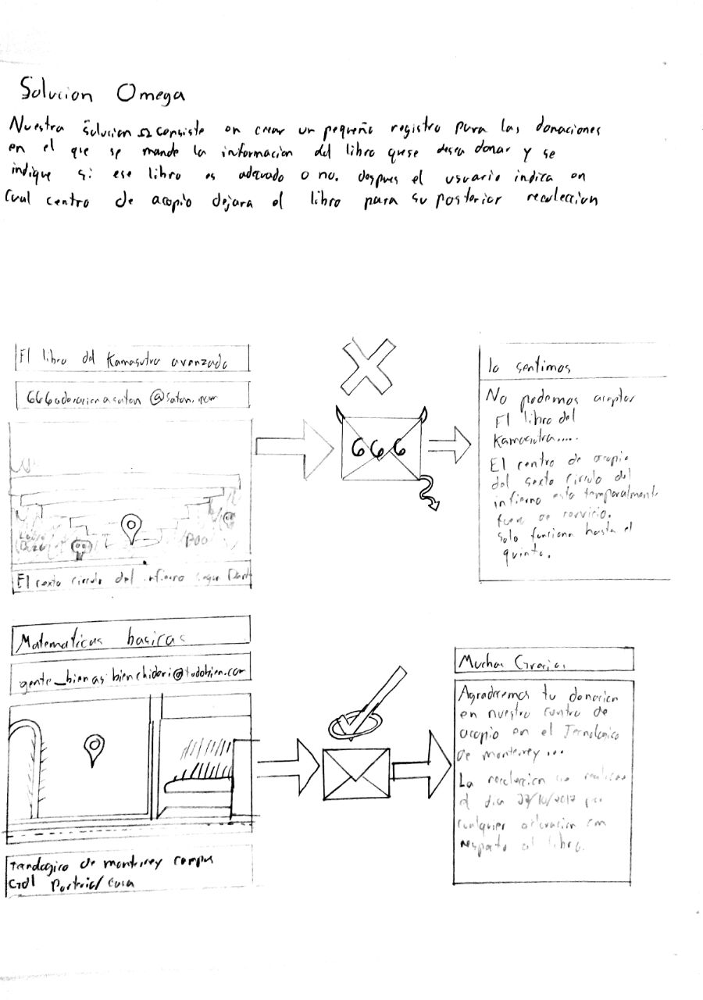
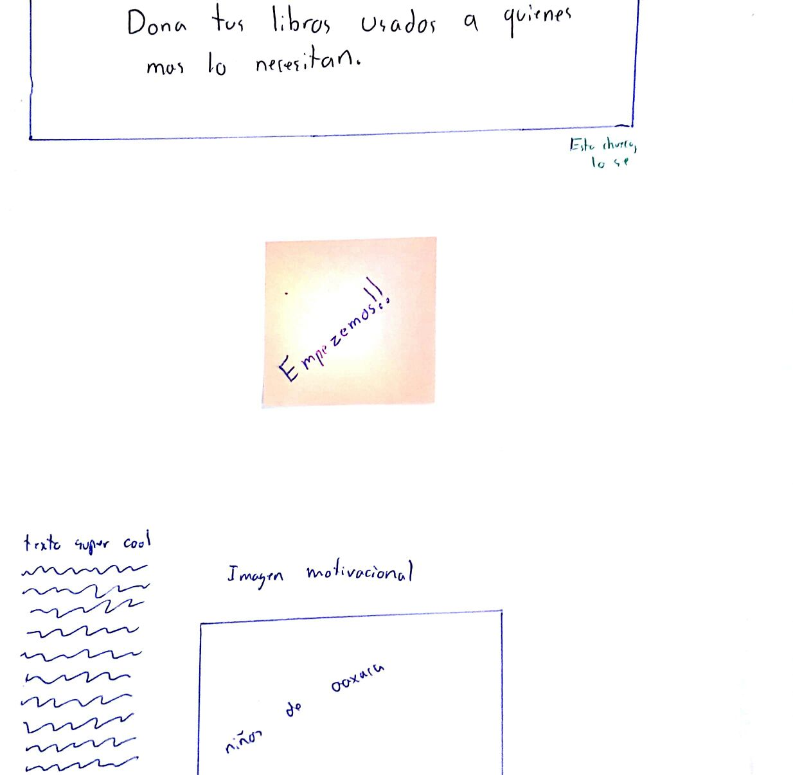
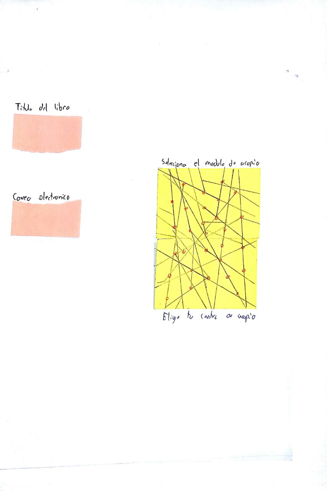
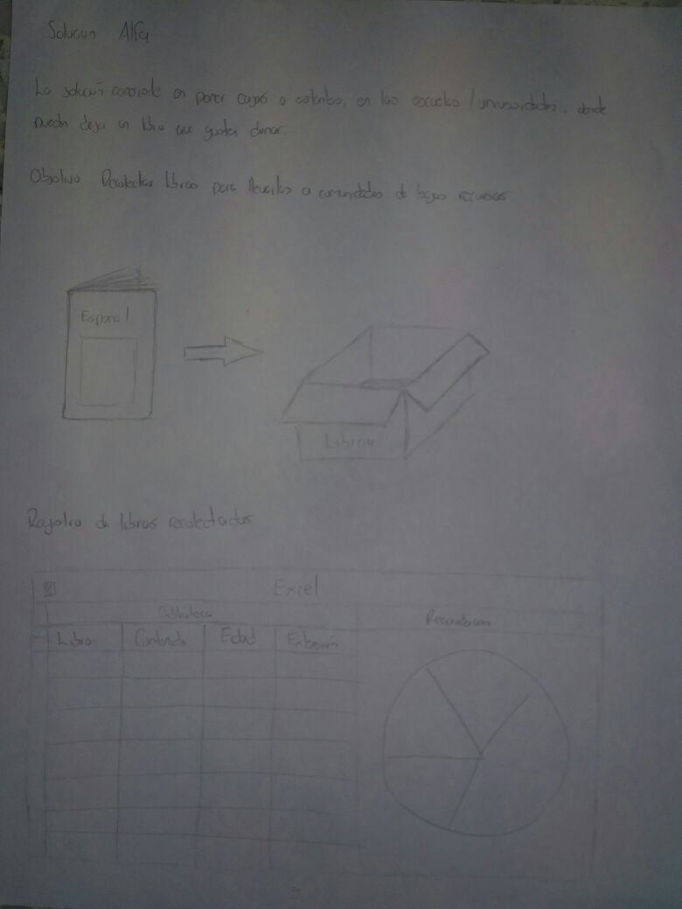
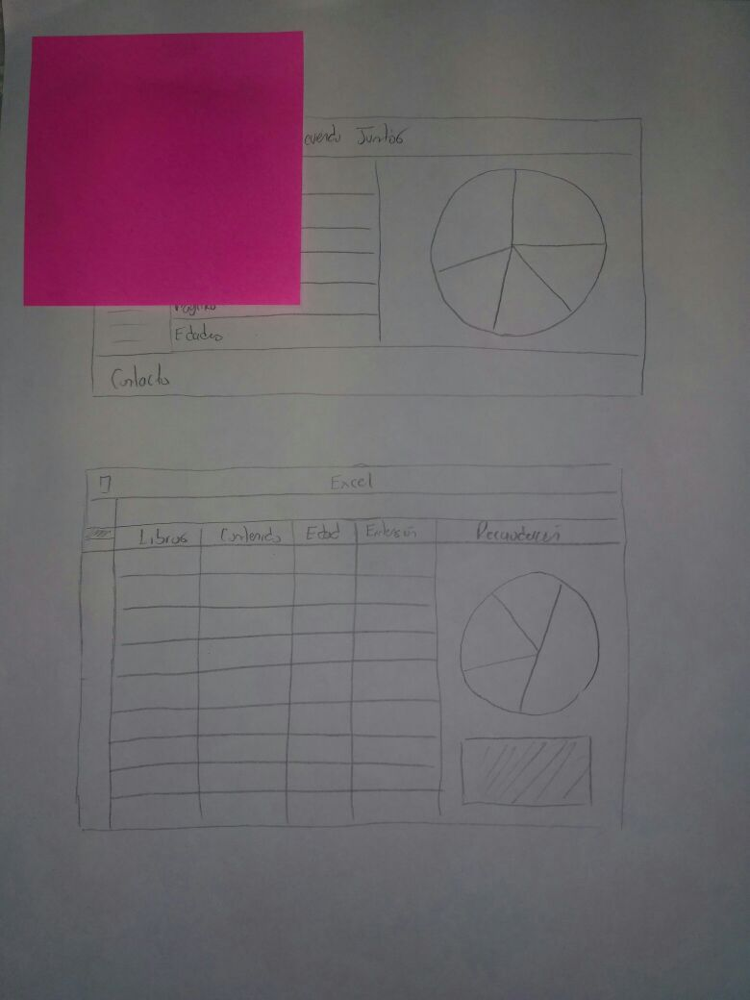

Solucion 1
Nuestra primera solucion consiste en crear un pequeño registro para las donaciones en el que se mande la informacion del libro que se desea donar y se indique si ese libro es adecuado o no. Despues el usuario indica en cual centro de acopio dejara el libro para su posterior recoleccion.
  Interview
Persona
Nuestra persona son todos aqueños niños y jovenes que no tienen una educacion digna, y en muchos casos ni oportunidades tienen para lograr salir adelante. Las edades abarcan desde los 6 años hasta los 15 años, despues de esta edad los jovenes pierden el interes por el estudio y comienzan a trabajar o hacer otras actividades.
En Oaxaca 13 de cada 100 personas de 15 años y mas, no saben leer ni escribir, su promedio de escolaridad es de 7.5 a esa edad.
Solution Proposal Beta
SolutionSolucion 2
La solucion consiste en dejar cajas o estantes, en los centros educativos, para que en ellos puedan dejar un libro que gusten donar. De igual manera hacer recolecciones en eventos , como alguna kermes.
 